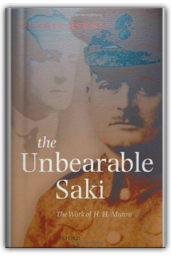
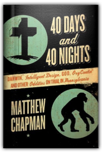
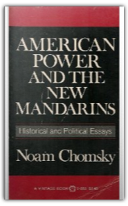

Tony Blair is a politician who defines our times. His emergence as Labour Party leader in 1994 marked a seismic shift in British politics. Within a few short years, he had transformed his party and rallied the country behind him, becoming prime minister in 1997 with the biggest victory in Labour’s history, and bringing to an end eighteen years of Conservative government. He took Labour to a historic three terms in office as Britain’s dominant political figure of the last two decades. 
The author of the national bestseller The Closing of the American Mind offers a provocative indictment of the devaluing of love and intimacy in today's culture. Allan Bloom explores the language of love from the Bible to Freud, shedding penetrating light on the true nature of our most basic human connections. "(A) rich mine of a book".—New York Daily News.
In this nail-biting adventure story, Hannay must outwit a foe far more intelligent than himself; muster the courage to propose to the lovely, clever Mary Lamington; and survive a brutal war. Although Mr. Standfast is a sequel to The Thirty-Nine Steps, it offers far more characterisation and philosophy than the earlier book. For its pace and suspense, its changes of scenery and thrilling descriptions of the last great battles against the Germans, Mr Standfast offers everything that has made its author so enduringly popular. This publication from Boomer Books is specially designed and typeset for comfortable reading.
Here, from the father of spy fiction, is the grand sequence of his great master spy's adventures in four famous books: The Thirty-Nine Steps, Greenmantle, Mr. Standfast and The Three Hostages.
An authoritative historical assessment of american foreign policy in a crucial postwar decade.
Burke's seminal work was written during the early months of the French Revolution, and it predicted with uncanny accuracy many of its worst excesses, including the Reign of Terror. A scathing attack on the revolution's attitudes to existing institutions, property and religion, it makes a cogent case for upholding inherited rights and established customs, argues for piecemeal reform rather than revolutionary change - and deplores the influence Burke feared the revolution might have in Britain. "Reflections on the Revolution in France" is now widely regarded as a classic statement of conservative political thought, and is one of the eighteenth century's great works of political rhetoric.

The Unbearable Saki: The Work of H. H. Munro
Sandie Byrne
Saki is the acknowledged master of the short story. His writing is elegant, economical, and witty, its tone worldly, flippant irreverence delivered in astringent exchanges and epigrams more neat, pointed, and poised even than Wilde's. The deadpan narrative voice allows for the unsentimental recitation of horrors and the comically grotesque, and the generation of guilty laughter at some very un-pc statements. |
A classic 1967 memoir by one of the great journalists of the 20th century, Point of Departure collects James Cameron's eyewitness accounts of the atom bomb tests at Bikini atoll, the Chinese invasion of Tibet and the war in Korea, and vivid evocations of Mao Tse-Tung, Winston Churchill, and many others. Cameron, who was born in London in 1911, began his career in newspapers as a foreign correspondent; later, his television documentaries for the BBC and his column in The Guardian gave him a new audience in Britain and abroad. In the 1960s, Cameron was presented with the Granada Award for Foreign Correspondent of the Decade. He died in 1985.
A haunting tale of human resilience in the face of unrelieved horror, Camus' novel about a bubonic plague ravaging the people of a North African coastal town is a classic of twentieth-century literature.
Whittaker Chambers has written one of the really significant American autobiographies...penetrating and terrible insights into America in the early twentieth century. —Arthur Schlesinger, Jr.

40 Days and 40 Nights: Darwin, Intelligent Design, God, OxyContin®, and Other Oddities on Trial in Pennsylvania
Matthew Chapman
In this fascinating story of evolution, religion, politics, and personalities, Matthew Chapman captures the story behind the headlines in the debate over God and science in America.

American Power and the New Mandarins: Historical and Political Essays
Noam Chomsky
American Power and the New Manderins in the first significant work of social and political thought to come out of the Vietnamese catastrophe... I is the first draft of a declaration of intellectual independence, and though it deals with the past, its true significance must rest with the future." -Robert Sklar, The Natin
With a detailed critique of Irangate, Culture of Terrorism demonstrates how America's ruling elite perpetrates a particularly vile form of cultural imperialism — accusing America's enemies of precisely those 'terrorist' attributes that might more accurately describe the actions of America itself.
Since its original publication in 1983, Fateful Triangle has become a classic in the fields of political science and Middle East affairs. This new edition features new chapters and a new introduction by Noam Chomsky and a foreword by Edward Said. Examining America's search for a 'reliable ally' in the Middle East, Chomsky untangles the intricacies of the US-Israeli-Palestinian relationship and lays bare the contortions, lies and misinformation that have been used over the years to obscure the real agenda. In the process he reveals the extent to which modern nation-states make claims for peace while actively pursuing very different objectives. In three new chapters Chomsky examines the Palestinian Uprising, the 'Limited War' in Lebanon and the Israeli-PLO Accords after the Oslo signings. This is a timely and much-needed corrective to the mythmaking that has obscured the real history of peace negotiations in the Middle East. |

Fogus
Collection Total:
193 Items
193 Items
Last Updated:
Dec 16, 2011
Dec 16, 2011
 Made with Delicious Library
Made with Delicious Library